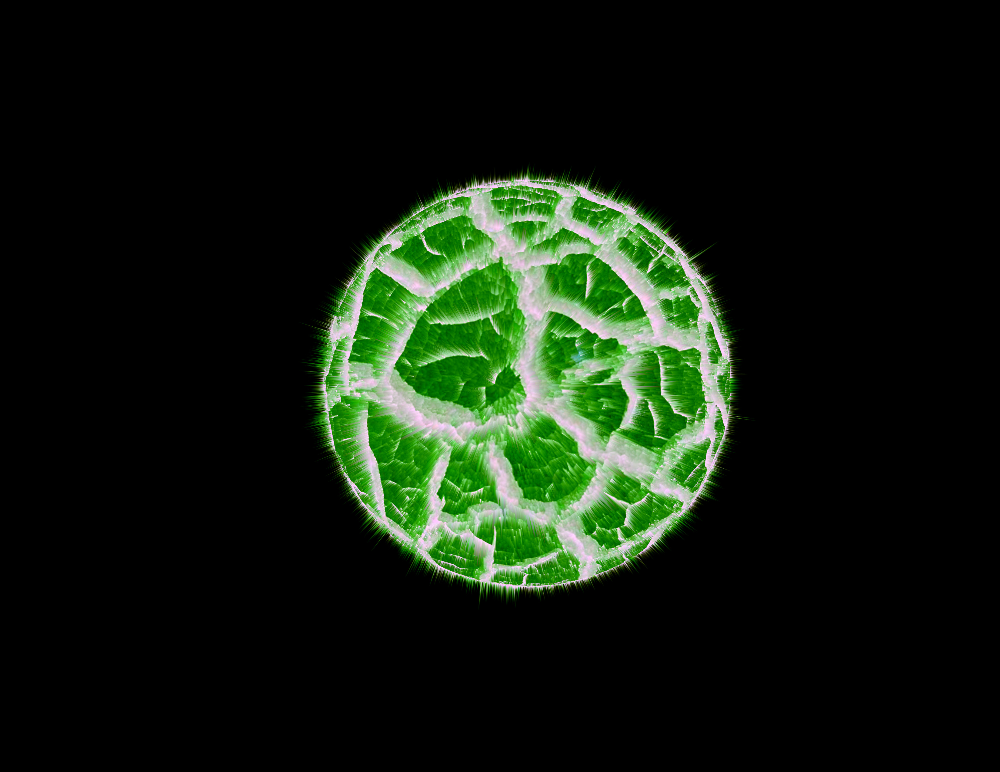

Exploding Planet Image
This photo was created while I was attending high school at La Feria. The photo was made using Adobe Photoshop. To create the planet I used an image of dried mud which would give the exploding planet depth. I chose green for my planet because it is my favorite color.
To create this image I attended a photojounalism class that allowed me to learn and use photoshop to create projects. Being apart of this class made me learn how photoshop is used for buisinesses to make eyecatching images. I plan to someday use photoshop so I can create projects for myself or workplace.
Adobe Photoshop is a great software to have. If you are interested in the software click on this link here!